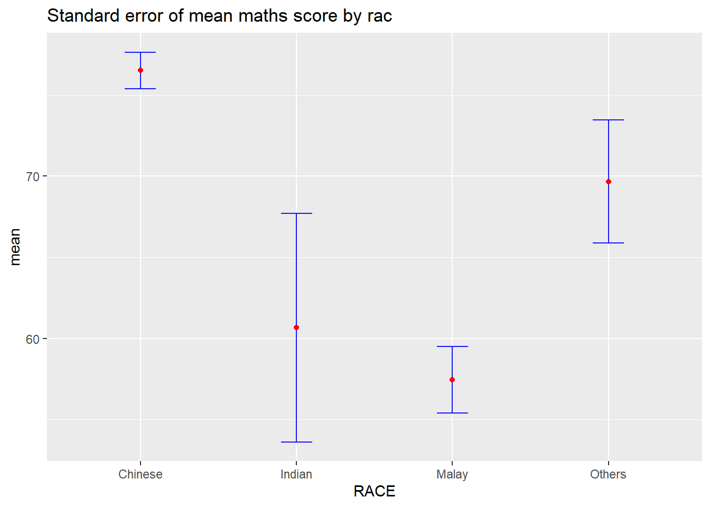
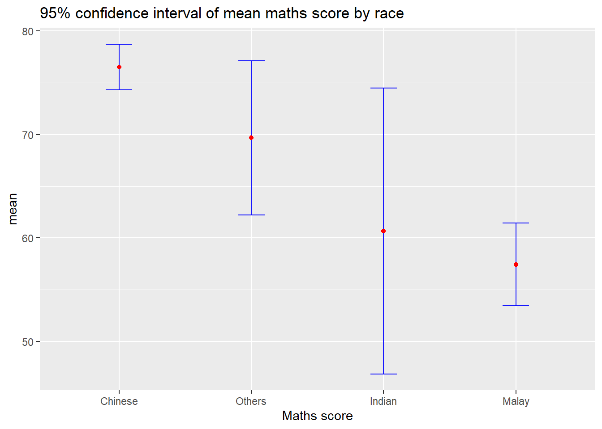
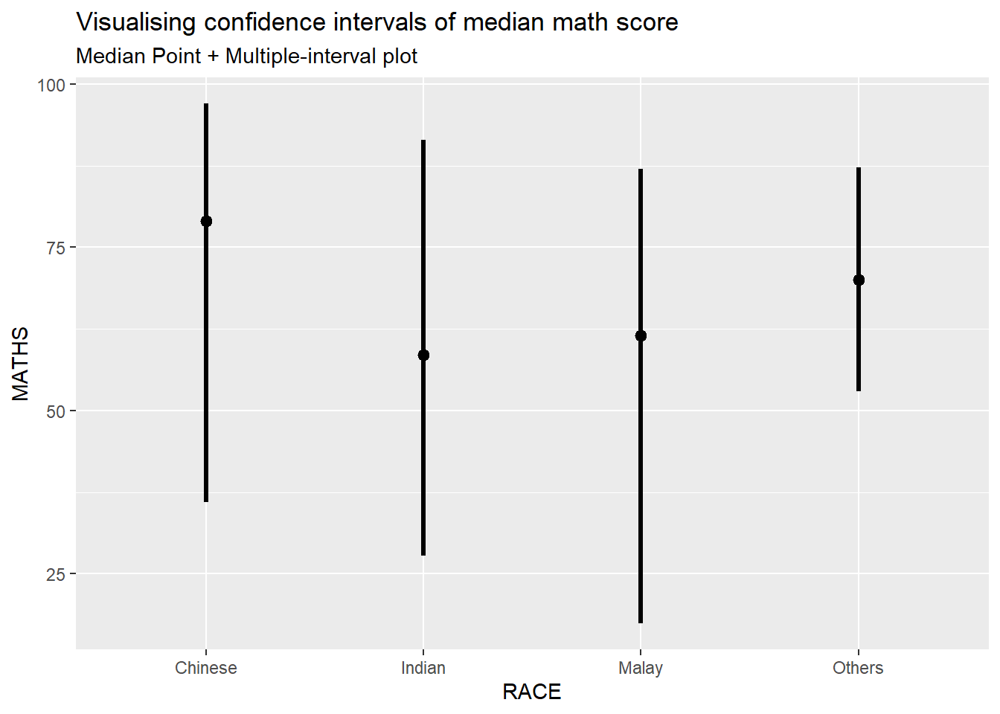

Code
devtools::install_github("wilkelab/ungeviz")With the assistance of ChatGPT
In this chapter, we will be learning how to create statistical graphics to visualize uncertainty. By the end of the chapter, we will be able to:
For this exercise the following R packages will be used:
devtools::install_github("wilkelab/ungeviz")pacman::p_load(ungeviz, plotly, crosstalk,
DT, ggdist, ggridges,
colorspace, gganimate, tidyverse)exam <- read_csv("data/Exam_data.csv", show_col_types = FALSE)ggplot2 methodsA point estimate is a single number, such as a mean. Uncertainty is expressed as standard error, confidence interval, or credible interval
We should not confuse the uncertainty of a point estimate with the variation in the sample.
In this section, we will be plotting error bars for MATHS scores based on race using the exam tibble data frame.
The following functions from the dplyr package and code will be used to calculate the required summary statistics.
group_by():Groups the observations by RACE.summarise(): Calculates the count of observations, along with the mean and standard deviation of MATHS scores.mutate(): Computes the standard error of MATHS scores for each race.my_sum <- exam %>%
group_by(RACE) %>%
summarise(
n=n(),
mean=mean(MATHS),
sd=sd(MATHS)
) %>%
mutate(se=sd/sqrt(n-1))The code below will be used to display my_sum tibble data frame in a html table format.
knitr::kable(head(my_sum), format = 'html')| RACE | n | mean | sd | se |
|---|---|---|---|---|
| Chinese | 193 | 76.50777 | 15.69040 | 1.132357 |
| Indian | 12 | 60.66667 | 23.35237 | 7.041005 |
| Malay | 108 | 57.44444 | 21.13478 | 2.043177 |
| Others | 9 | 69.66667 | 10.72381 | 3.791438 |
Now, we will plot the standard error bars for the mean MATHS scores by race, as shown below.
geom_point(), it is important to indicate stat=“identity”ggplot(my_sum) +
geom_errorbar(
aes(x=RACE,
ymin=mean-se,
ymax=mean+se),
width=0.2,
colour="blue",
alpha=0.9,
size=0.5) +
geom_point(aes
(x=RACE,
y=mean),
stat="identity",
color="red",
size = 1.5,
alpha=1) +
ggtitle("Standard error of mean maths score by rac")
In addition to plotting standard error bars for point estimates, we can also visualize the confidence intervals of the mean MATHS scores by race.
The confidence intervals are calculated using the formula: mean ± 1.96 × standard error (SE).
The error bars are arranged based on the average MATHS scores.
The labs() function from ggplot2 is used to modify the x-axis label.
ggplot(my_sum) +
geom_errorbar(
aes(x=reorder(RACE, -mean),
ymin=mean-1.96*se,
ymax=mean+1.96*se),
width=0.2,
colour="blue",
alpha=0.9,
size=0.5) +
geom_point(aes
(x=RACE,
y=mean),
stat="identity",
color="red",
size = 1.5,
alpha=1) +
labs(x = "Maths score",
title = "95% confidence interval of mean maths score by race")
We will learn how to create interactive error bar plots to display the 99% confidence intervals of the mean MATHS scores by race, as shown in the figure below.
shared_df = SharedData$new(my_sum)
bscols(widths = c(4,8),
ggplotly((ggplot(shared_df) +
geom_errorbar(aes(
x=reorder(RACE, -mean),
ymin=mean-2.58*se,
ymax=mean+2.58*se),
width=0.2,
colour="blue",
alpha=0.9,
size=0.5) +
geom_point(aes(
x=RACE,
y=mean,
text = paste("Race:", `RACE`,
"<br>N:", `n`,
"<br>Avg. Scores:", round(mean, digits = 2),
"<br>95% CI:[",
round((mean-2.58*se), digits = 2), ",",
round((mean+2.58*se), digits = 2),"]")),
stat="identity",
color="red",
size = 1.5,
alpha=1) +
xlab("Race") +
ylab("Average Scores") +
theme_minimal() +
theme(axis.text.x = element_text(
angle = 45, vjust = 0.5, hjust=1)) +
ggtitle("99% Confidence interval of average /<br>maths scores by race")),
tooltip = "text"),
DT::datatable(shared_df,
rownames = FALSE,
class="compact",
width="100%",
options = list(pageLength = 10,
scrollX=T),
colnames = c("No. of pupils",
"Avg Scores",
"Std Dev",
"Std Error")) %>%
formatRound(columns=c('mean', 'sd', 'se'),
digits=2))ggdist methodsggdist is an R package that offers flexible ggplot2 geoms and stats specifically designed for visualizing distributions and uncertainty.
It supports both frequentist and Bayesian uncertainty visualization by focusing on distribution-based approaches:
For frequentist models, it visualizes confidence or bootstrap distributions (see vignette(“freq-uncertainty-vis”)).
For Bayesian models, it visualizes probability distributions, with extended functionality available through the tidybayes package.
ggdist methodsstat_pointinterval() of ggdist is used to build a visual for displaying distribution of maths scores by race.
exam %>%
ggplot(aes(x = RACE,
y = MATHS)) +
stat_pointinterval() +
labs(
title = "Visualising confidence intervals of mean math score",
subtitle = "Mean Point + Multiple-interval plot")
This function comes with many arguments. In the code below, the following arguments are used:
width = 0.95
point = median
interval = qi
For more information on the arguments available, please refer to this link.
exam %>%
ggplot(aes(x = RACE, y = MATHS)) +
stat_pointinterval(.width = 0.95,
.point = median,
.interval = qi) +
labs(
title = "Visualising confidence intervals of median math score",
subtitle = "Median Point + Multiple-interval plot")